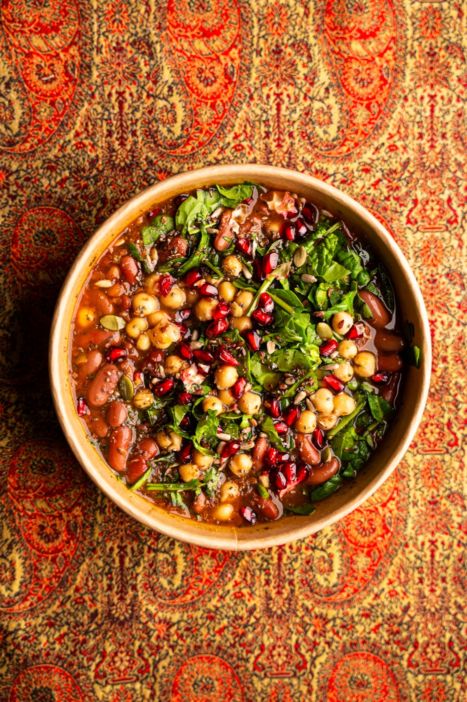
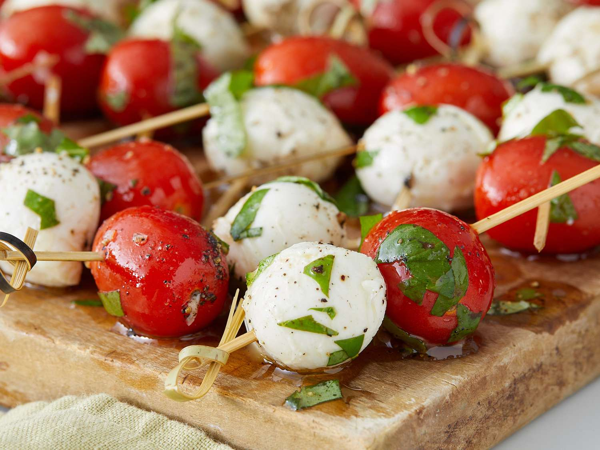
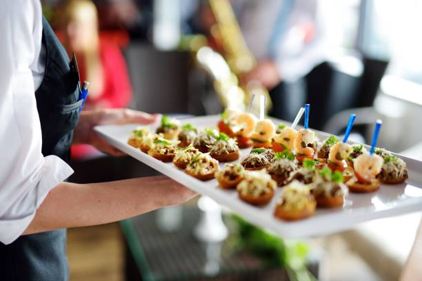

Where Persian roots meet life in Den Haag
Dena has been cooking Persian food for her family for decades. When she moved from Iran to the Netherlands, those recipes came with her.
Before opening the restaurant, Dena ran her own catering service for schools, preparing more than 50,000 meals for students. It was there that her home-style Persian cooking met the demands of large-scale kitchens, building years of professional experience along the way.
What started in her home kitchen eventually became DENA'S Persian Fusion Restaurant, a place where she cooks the way she always has, now for a wider table. The food is Persian at its core, shaped by the ingredients, people, and rhythms of life here in Den Haag.

For us, food is simple and serious at the same time. It's how people gather. It's how care is shown. We cook dishes that come from memory and habit, not trends. We respect where the food comes from, while using the local ingredients and influences that surround us today. Above all, we believe a good meal should make people feel comfortable, welcome and at ease.
Our commitment is to serve authentic Persian flavors while embracing the local ingredients and community that make Den Haag our home.

DENA'S Persian Fusion Restaurant is still a family-run kitchen. You'll often find Dena cooking, Kasper welcoming guests and Lars helping wherever he's needed.
Some things change as we grow. Others don't. We still cook with care and we still believe that everyone who sits at our table should feel at home.

What guests and platforms say about DENA's
Awarded a Travelers' Choice badge — placing DENA's in the top 10% of restaurants worldwide. Perfect 5.0/5 rating from verified guests.
Rated 9.1 out of 10 on TheFork by diners who praise the food quality, atmosphere, and the personal touch of Dena's service.
"Tastes exactly like home." "The best Persian food in Den Haag." "Real home cooking elevated to restaurant quality." Consistent five-star reviews across all platforms.
Everything you need to know, at a glance
Persian fusion — traditional Iranian recipes (Ghormeh Sabzi, Fesenjoon, Zereshk Polo, Khoresh Bademjan, Baghali Polo) prepared with fresh Dutch produce and daily-fresh North Sea fish.
Prinsestraat 62, 2513 CE Den Haag. Open Tue–Thu & Sun 11:00–19:00, Fri–Sat 11:00–22:00. 15 minutes walk from Den Haag Centraal, near the Mauritshuis.
Founded by Dena, who brought her Persian family recipes from Iran to the Netherlands. A genuine family kitchen run by Dena (chef), Kasper (front of house) and Lars. Multilingual team: English, Dutch and Persian spoken.
Reserve a table via TheFork — recommended for Friday and Saturday evenings. Also available for pickup and delivery on UberEats. Catering from €35 per person for corporate and private events.